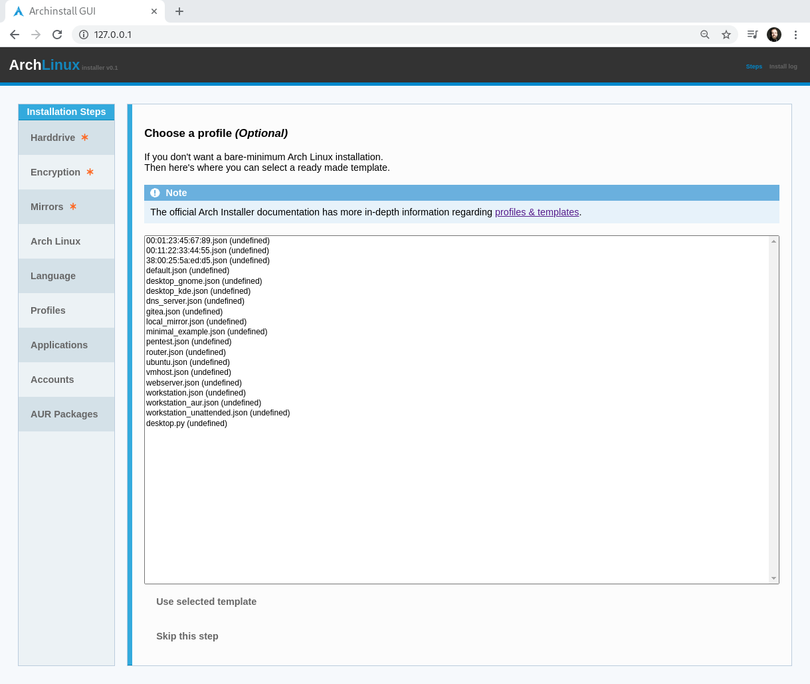

Profiles¶
Here you can select pre-configured setups that appeal to you, or skip this step entirely if you just want a minimal Arch Linux installation without any additional packages.
The profiles range from desktop profiles with a small graphical environment to webserver which configures a webserver using common applications and default setups.
You can read more on the profiles them selves in the _profiles section.
